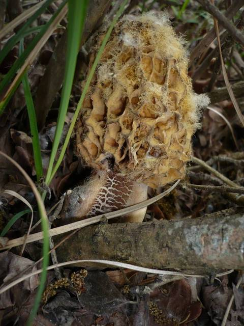
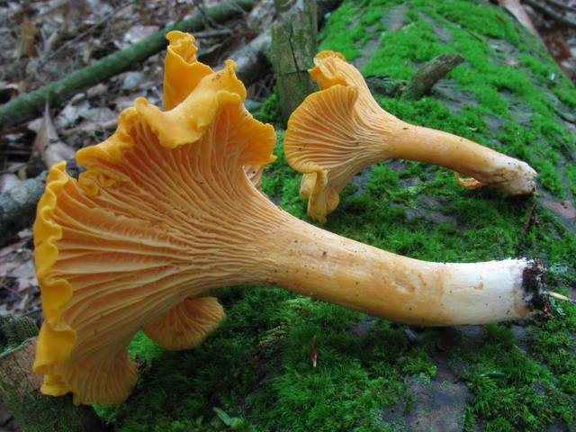
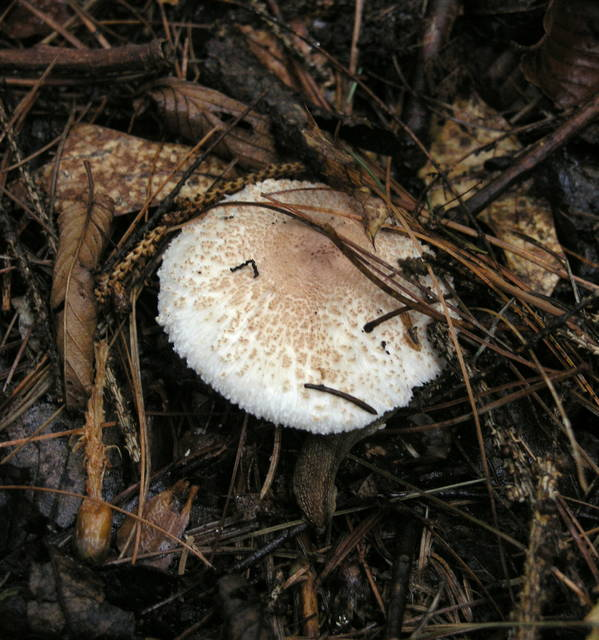

In Switzerland, there are approximately 5,000 different mushroom species that can be foraged from summer until the first autumn frost. Among this vast variety, three species stand out as the most popular and highly favored by mushroom enthusiasts: the death cap, the porcini, and the morel. Recognizing that many people seek specific mushroom types, we have developed a Machine Learning algorithm specifically designed to assist in identifying the seven most sought-after mushroom species in Switzerland.
Mushroom classification using Machine Learning is a well-established field that has gained traction in recent years due to the availability of public datasets containing images of mushrooms. Various applications, such as Picture Mushroom, utilize machine learning models to classify edible mushrooms. However, the challenge lies in accurately identifying the diverse array of mushroom species, as misidentification can have severe consequences. To address this issue, we have chosen to focus on a smaller set of seven specific species, allowing us to achieve more relevant and precise results.
This project is motivated by the urgent need to mitigate the significant risks associated with misidentifying mushrooms, as consuming toxic varieties can lead to severe illness or even fatality. Our objective is to develop a robust model capable of accurately classifying mushrooms, providing mushroom enthusiasts and individuals with a reliable decision-making algorithm for mushroom consumption and safety.
By leveraging Machine Learning techniques, our model aims to empower users with an informed approach to mushroom foraging and consumption. The algorithm will serve as a valuable tool for individuals to make educated decisions regarding mushroom selection, ensuring their safety and enjoyment while appreciating Switzerland's rich fungal biodiversity.
The dataset comprises a collection of photographs showcasing various mushroom species found in Switzerland. Careful curation was employed to extract a representative subset from an extensive and diverse dataset. Within this refined selection, we focused on 14 distinct mushroom species. Notably, each species is represented by a pair of mushrooms—an edible one and a visually similar, yet non-edible counterpart.
By meticulously handpicking these paired specimens, we aimed to highlight the subtle differentiating features between edible and non-edible mushrooms. This approach not only enhances the dataset's educational value but also fosters an understanding of the visual cues and characteristics that distinguish safe-to-consume mushrooms from their potentially harmful look-alikes.
Furthermore, the geographical focus on Switzerland ensures that the dataset captures the specific mushroom species found within this region. This localized approach offers valuable insights into the mushroom biodiversity unique to Switzerland's natural habitats, thereby catering to researchers, enthusiasts, and conservationists interested in understanding and preserving the mushroom ecosystem in this geographical area.
As contributors of this project, your role holds immense significance in advancing the classification of mushrooms based on their edibility. Your tasks encompass two primary responsibilities, starting with acquiring the necessary knowledge and skills to classify the 14 mushroom species as either edible or non-edible. To facilitate this learning process, you have access to a comprehensive tutorial that provides detailed information on distinguishing characteristics and identification criteria for each mushroom species.
Once you have familiarized yourself with the classification criteria and can confidently recognize each of the 14 mushrooms, you will proceed to the second phase of your task: classifying the images within the dataset. This dataset comprises a diverse collection of mushroom images, and your role is to assign a classification label of "edible," "non-edible," or "unknown" to each image.
When analyzing an image, you should carefully assess its visual characteristics, taking into account color, shape, texture, and other distinguishing features. Drawing upon the knowledge you acquired during the learning phase, you will determine whether the depicted mushroom is edible, non-edible, or if uncertainty persists, you should classify it as "unknown."
Your meticulous efforts in accurately labeling the dataset images contribute significantly to the development of the Machine Learning algorithm. By providing precise and consistent classifications, you enable the model to learn and generalize patterns, enhancing its accuracy in classifying mushrooms in real-world scenarios.
It is crucial to exercise caution and adhere to strict guidelines during the classification process. The potential consequences of misclassification underscore the importance of attention to detail and expertise. Your dedication to maintaining accuracy ensures the reliability and safety of the algorithm's recommendations, empowering individuals to make informed decisions regarding mushroom edibility.
Overall, your tasks encompass both learning and applying your knowledge to classify the 14 mushroom species accurately. By successfully labeling the dataset images as edible, non-edible, or unknown, you contribute invaluable insights that drive the development of an effective and reliable Machine Learning algorithm for mushroom classification. Your contributions play a vital role in promoting safety and providing valuable information to mushroom enthusiasts and individuals alike.
Welcome to the tutorial designed to equip you with the knowledge and skills needed to accurately classify the 14 mushroom species. This comprehensive resource will guide you through the distinguishing characteristics that differentiate edible and non-edible mushrooms. Mastering this classification is vital for ensuring the reliability and safety of our Machine Learning algorithm. Let's embark on this educational journey together and promote informed decision-making in mushroom identification.
Morchella (edible)

- Distinctive honeycomb-like cap
- Cone-shaped or brain-like structure
- Cap color varies from light tan to dark brown
- Often exhibits a lighter-colored ridged pattern
- Coarse and ridged surface texture
- Hollow stem
- Light-colored stem attached to the lower portion of the cap
Gyromitra esculenta (non edible twin of Morchella)

- Distinctive brain-like or saddle-shaped cap
- Irregular and convoluted surface texture
- Cap color varies from light brown to dark reddish-brown
- Often appears wrinkled and folded
- No distinct cap stem
- Cap attached directly to the upper part of the mushroom
Cantharellus (edible)

- Distinctive funnel or trumpet-shaped cap
- Cap color ranges from vibrant yellow to orange
- Smooth and wavy cap surface
- Cap is often concave or depressed in the center
- Gills are fork-like and extend from the cap to the stem
- Stem is often stout, firm, and of a similar color to the cap
- Overall appearance can vary, but generally recognized as a visually appealing mushroom
Omphalotus olearius (non edible twin of Cantharellus)

- Cap: Convex to flat with a wavy or irregular edge; typically bright orange to orange-yellow in color.
- Cap Surface: Smooth and often slightly sticky or greasy when moist.
- Gills: Decurrent, meaning they run down the stem; initially white to pale yellow, later turning bright orange.
- Stem: Short and stubby; similar in color to the cap, often with a slight taper towards the base.
- Spore Print: Pale yellow to greenish yellow.
- Bioluminescence: Omphalotus olearius is bioluminescent, meaning it can emit a faint greenish glow in the dark.
Boletus edulis (edible)

- Robust and solid mushroom
- Cap is large, typically ranging from 5 to 25 centimeters in diameter
- Cap shape varies from convex to flat, often with a slightly depressed center
- Cap color is typically brown, ranging from light to dark shades
- Cap surface is smooth and dry, sometimes displaying cracks or scales
- Pores on the underside of the cap are small, round, and initially white or yellowish, later turning olive or greenish-yellow with age
- Stem is thick, sturdy, and often has a bulbous base
- Stem color is similar to or slightly lighter than the cap, sometimes displaying a reticulated pattern
- Overall appearance can vary, but the combination of a large cap, brown color, and small, round pores on the underside are characteristic of Boletus edulis
Boletus radicant (non edible twin of Boletus edulis)

- Boletus radicant, also known as the rooting bolete, is a mushroom species.
- Cap shape varies from convex to flat, sometimes becoming slightly depressed in the center.
- The cap color ranges from dark reddish-brown to chestnut brown.
- The cap surface is dry, smooth, and often appears velvety.
- The pore surface underneath the cap is initially yellow, later turning olive or olive-brown with age.
- The tubes are angular and extend downward from the cap.
- The stem is stout, often tapering towards the base, and similar in color to the cap or slightly lighter.
- The stem is typically covered with a network-like pattern or reticulation.
- Overall, Boletus radicant has a robust appearance, with a dark brown cap, angular tubes, and a stout stem with reticulation.
Lepiota (edible)

- Lepiota is a genus of mushrooms that includes various species.
- The cap shape can range from convex to bell-shaped or conical.
- Cap colors vary widely among species, including white, cream, brown, or reddish-brown.
- The cap surface can be smooth, scaly, or adorned with patches or spots.
- Gills are typically free from the stem and can be white, cream, or pinkish.
- The stem is slender, often with a ring or annulus present.
- Some Lepiota species have a distinct bulbous base or volva.
- Overall, Lepiota mushrooms exhibit a delicate and often elegant appearance.
Macrolepiota procera (non edible twin of Lepiota)

- Macrolepiota procera, also known as the parasol mushroom, is a large and impressive mushroom species.
- The cap is initially egg-shaped and then expands into a broad, umbrella-like shape as it matures.
- Cap color is typically creamy-white to light brown, with darker brown scales or patches on the surface.
- The cap surface is scaly, with the scales arranged in a radial pattern.
- Gills are white or cream-colored and are free from the stem.
- The stem is tall, slender, and often has a distinctive swollen base.
- The stem color is white, sometimes with brownish scales towards the base.
- The stem may feature a prominent, movable ring or annulus.
- Overall, Macrolepiota procera has an impressive stature, with a large, umbrella-shaped cap, scaly surface, and tall, slender stem.
Laccaria amethystina (edible)

- Laccaria amethystina, commonly known as the amethyst deceiver, is a small and colorful mushroom species.
- The cap is typically convex or bell-shaped, with a diameter ranging from 2 to 8 centimeters.
- Cap color can vary, but it is often vibrant purple or lilac, fading to pale or whitish towards the edges.
- The cap surface is smooth and sometimes slightly sticky when moist.
- Gills are closely spaced, narrow, and attached to the stem.
- The gill color matches or complements the cap color, often appearing purplish or pinkish.
- The stem is slender, fragile, and typically similar in color to the cap.
- The overall appearance of Laccaria amethystina is delicate and captivating, with its vibrant purple or lilac cap and complementary gills.
Cortinarius vernus (non edible twin of Laccaria amethystina)

- The cap is typically reddish-brown or chestnut in color, sometimes with darker patches.
- The cap surface is smooth and often slightly sticky when moist.
- The gills are initially pale yellow but can turn rust-colored as they mature.
- The stem is slender, often with a distinctive cobweb-like veil (cortina) when young.
Coprinus comatus (edible)

- Cap: Initially oval-shaped, later bell-shaped or conical; white or creamy white in color; covered in shaggy scales or flakes.
- Gills: Crowded, white, and free from the stem.
- Stem: Tall, slender, often with a swollen base.
- Unique Feature: The cap can dissolve and form a black, inky liquid as it matures.
Coprinopsis atramentaria (non edible twin of Coprinus comatus)

- Cap: Initially bell-shaped, becoming convex or flattened with age; dark gray to black in color.
- Gills: Initially white, turning gray and eventually black as the mushroom matures.
- Stem: Tall and slender, sometimes with a slightly bulbous base; white or pale gray in color.
- Veil: Initially present as a partial veil that covers the gills, leaving a ring or remnants on the upper stem.
- Spore Print: Black or dark brown, which gives rise to the common name "inky cap."
Agaricus campestris (edible)

- Cap: Initially rounded or oval-shaped, becoming convex and finally flattening with age; usually creamy white to light brown in color.
- Cap Surface: Smooth and sometimes with small scales or patches, especially when young.
- Gills: Initially pink, then turning dark brown as the mushroom matures; crowded and free from the stem.
- Ring: Often present as a partial veil that forms a ring-like structure on the upper stem, which may disappear or leave remnants.
- Stem: White or creamy white, sometimes with a slightly bulbous base; sturdy and firm.
- Spore Print: Dark brown.
Agaricus xanthodermus (non edible twin of Agaricus campestris)

- Cap: Initially rounded or oval-shaped, expanding to convex and eventually flattening; typically white or cream-colored, but often develops yellow discoloration when bruised or handled.
- Cap Surface: Smooth and sometimes with small scales or patches, especially when young.
- Gills: Initially pink, then turning dark brown as the mushroom matures; crowded and free from the stem.
- Ring: Often present as a partial veil that forms a ring-like structure on the upper stem, which may disappear or leave remnants.
- Stem: White or cream-colored, sometimes with a bulbous base; when bruised or damaged, the stem turns yellow, particularly at the base.
- Odor: Often described as phenolic or resembling ink or phenol-like chemicals.
- Spore Print: Dark brown.
Leaderboard and evaluation:
First place,second place, third place...
Have queries, or feedback or looking for teammates, drop a message on AIcrowd Community ForumAIcrowd Community Forum. Please use for all communication to reach the Amazon KDD cup 2023 team.
How we collected Data ? Data Collection Pipeline


Next steps :